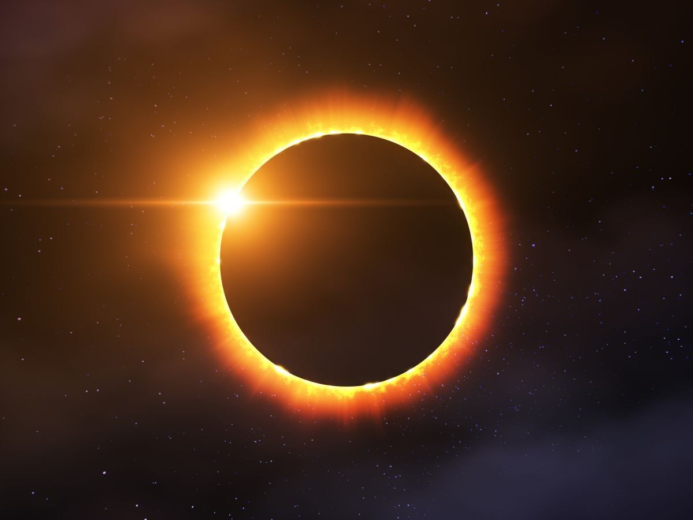

Eclipse, in astronomy, complete or partial obscuring of a celestial body by another. An eclipse occurs when three celestial objects become aligned. An example is a solar eclipse. The Moon, when full, may enter the shadow of Earth. The motion of the Moon around Earth is from west to east (see the figure of a lunar eclipse, in which the view of Earth is from above its North Pole). For an observer facing south, the shadowing of the Moon begins at its left edge (if the Moon were north of the observer, as, for example, in parts of the Southern Hemisphere, the opposite would be true). If the eclipse is a total one and circumstances are favourable, the Moon will pass through the umbra, the darkest part of the shadow, in about two hours. During the eclipse the surface of the Moon cools at a rate dependent on the constitution of the lunar soil, which is not everywhere the same. Many spots on the Moon sometimes remain brighter than their surroundings during totality—particularly in their output of infrared radiation—possibly because their heat conductivity is less, but the cause is not fully understood.A solar eclipse, especially a total one, can be seen from only a limited part of Earth, whereas the eclipsed Moon can be seen at the time of the eclipse wherever the Moon is above the horizon. When the Moon moves through the shadow of Earth (see the figure of a lunar eclipse), it dims considerably but remains faintly visible. Because the shadow of Earth is directed away from the Sun, a lunar eclipse can occur only at the time of the full moon—that is, when the Moon is on the side of Earth opposite to that of the Sun. A lunar eclipse appears much the same at all points of Earth from which it can be seen. When the Moon enters the penumbra, a penumbral eclipse occurs. The dimming of the Moon’s illumination by the penumbra is so slight as to be scarcely noticeable, and penumbral eclipses are rarely watched. After a part of the Moon’s surface is in the umbra and thus darkened, the Moon is said to be in partial eclipse. After about an hour, when the whole disk of the Moon is within the umbra, the eclipse becomes total (see video). If the Moon’s path leads through the centre of the umbra, the total eclipse can be expected to last about an hour and three-quarters.

https://school.eb.com/levels/high/article/eclipse/106197